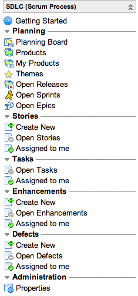

SDLC Scrum Process
| |
Note: This article applies to Fuji. For more current information, see Scrum Process Flow at http://docs.servicenow.com
The ServiceNow Wiki is no longer being updated. Please refer to http://docs.servicenow.com for the latest product documentation. |
Contents
1 Overview
Scrum is an iterative and incremental framework for project management mainly deployed in agile software development environments. Scrum has the following characteristics:
- A short, fixed schedule of cycles with adjustable scope, called sprints, to address rapidly changing development needs.
- A repeating sequence of events, milestones, and meetings.
- A practice of implementing and testing new requirements, called stories, to ensure some work is release-ready after each sprint.
- Commonly used roles such as product owner, scrum master, and team member.
The Scrum Process Pack is a ServiceNow plugin.
2 The Scrum Framework
The scrum framework contains the following processes:
- Product Backlog: The product owner creates and maintains a product backlog, which is a collection of user stories captured within a scrum product. A product represents a development target of related functionality that is composed of themes, epics, and stories. A product owner typically ranks the stories in a product backlog by order of importance.
- Release Backlog: A release is a time frame in which a number of development iterations are completed. The product owner collaborates with the scrum master to determine which stories should be targeted for a release. Stories from one or more products can be targeted to a release. Typically, the decision process is based on the release timescale, the story rank within the product backlog, and the story complexity. Other criteria can be used depending on the nature of the project. The targeted stories form the release backlog. Stories in the release backlog are targeted to a release, but have not yet been associated with a sprint. Throughout the release, the release backlog shrinks as stories are moved into sprints. As this occurs, the product owner can see what remains to be completed.
- Sprint Backlog: The sprint backlog is a list of stories the sprint team members have agreed to complete for a sprint. During sprint planning, the scrum master collaborates with the scrum team to decide which stories they can commit to delivering in the sprint. Typically, they commit to the top ranked stories first. The team decides what scrum tasks are necessary for each story. The product owner should be present to answer any questions.
- Sprints: Team members work to complete stories in the current sprint backlog. Team progress is tracked during daily stand-up meetings in which members discuss the work completed the previous day, the planned work for the next day, and any blocking issues. The scrum master keeps the team members focused on completing the stories in the current sprint and tries to remove any impediments they face. At the end of the sprint, all the stories should be complete. Any incomplete stories are moved into an appropriate backlog. A review meeting at the end of the sprint, known as a retrospective, allows team members to discuss what went well and what did not, with the goal of improving future sprints.
- Sprint planning: The next sprint begins with the team importing stories from the release backlog into the sprint backlog.
3 How to Use These Procedures
The SDLC Scrum Process Pack provides the functionality to support multiple teams using the scrum methodology. A key benefit for an IT organization is how the scrum application uses data already held in the ServiceNow database, such as configuration items (CI) and user information. If required, scrum activities can be tied into IT Service Management processes such as Incident, Problem, and Change Management. The procedures described here are a common practice approach to scrum that uses all the Scrum Process Pack functionality for illustrative purposes. You might choose to implement scrum differently. These procedures describe several methods for creating records where alternatives exist, with the intent of giving you different options. To see all the common practice tasks, refer to The Scrum Process.
4 Activities and Artifacts
4.1 Activities
The following are typical activities of the scrum process:
- Sprint planning: The scrum master and team members select the stories that they can commit to deliver during a sprint.
- Daily scrum: The scrum master meets briefly with team members each day to discuss progress, planned work, and any impediments (known as blockers).
- Sprint reviews: At the end of the sprint, the scrum master and team members discuss the work completed and demonstrate new features.
- Sprint retrospectives: At the end of the sprint, the scrum master and team members discuss the work completed and demonstrate the completed work to the product owner. In addition, the team reviews the sprint and discusses ways to improve the execution of future sprints.
4.2 Artifacts
- Velocity chart: A chart displaying the historical performance of a team, used to better estimated the amount of work the team can deliver in a future sprint.
- Burn down chart: A chart generated during a sprint that provides at-a-glance reporting of ideal sprint progress against actual sprint progress over time.
5 Installed with the Scrum Process Pack
A number of new roles and permissions are provided with the SDLC Scrum Process Pack. For more details, see the instructions for assigning roles in Scrum.
5.1 Menus and Modules
Activating this feature adds the SDLC (Scrum Process) menu to the application navigator with the following modules.
|  |
|
{kind=link}
5.2 Properties
Navigate to SDLC (Scrum Process) > Administration > Properties to configure the following properties:
| Property | Description |
|---|---|
| com.snc.sdlc.scrum.pp.progress.story.states | Stories in any one of the states specified in this comma separated list are shown in the progress board (in the order specified). |
| com.snc.sdlc.scrum.pp.progress.task.state | Tasks in any one of the states specified in this comma separated list are shown in the progress board (in the order specified) |
| com.snc.sdlc.scrum.pp.task_uses_actual_hours | Enable the Actual hours field in the Scrum Task form. Displays actual hours of tasks on the task progress board. |
| com.snc.sdlc.scrum.pp.progress_board_parent_updates | Specifies whether changes to tasks in the progress board update their parent stories. |
| com.snc.sdlc.scrum.pp.default_sprint_length | The default sprint length (in days) used if the length cannot be calculated from the sprint. |
| com.snc.sdlc.scrum.pp.burndown.ideal.linear | Draws the burndown chart ideal line as a straight line. |
5.3 Changes to Tables and States
New states in the Scrum Process Pack override previous states for all scrum tables. The Scrum Process Pack introduces the following changes to the SDLC - SCRUM tables:
| Table | Update |
|---|---|
| Scrum Task [rm_scrum_task] |
|
| Testing Task [rm_test] | Records are converted into records in the Scrum Task [rm_scrum_task] table. |
| Documentation Task [rm_doc] | Records are converted into records in the Scrum Task [rm_scrum_task] table. |
| Release Task [rm_task] | Records identified as being used in a scrum context are converted into records in the Scrum Task [rm_scrum_task] table. |
| Story [rm_story] | State and priority fields for records adjusted. An attempt is made to determine the sprint and release to which they belong. |
| Epic [rm_epic] | Records have their states updated. |
| Sprint [rm_sprint] | Records have their State fields updated. An attempt is made to determine the release to which they belong. |
| Features [rm_feature] | Records have their State fields updated. |
| Release [rm_release_scrum] | Records have their State fields updated. |
| Product [rm_product] | Records cloned as records in the Application Model [cmdb_application_product_model] table. |
6 Enhancements
6.1 Fuji
- Burn down charts have an updated look.
- Users have the added ability to drill down to sprint burn down charts from release burn down charts.